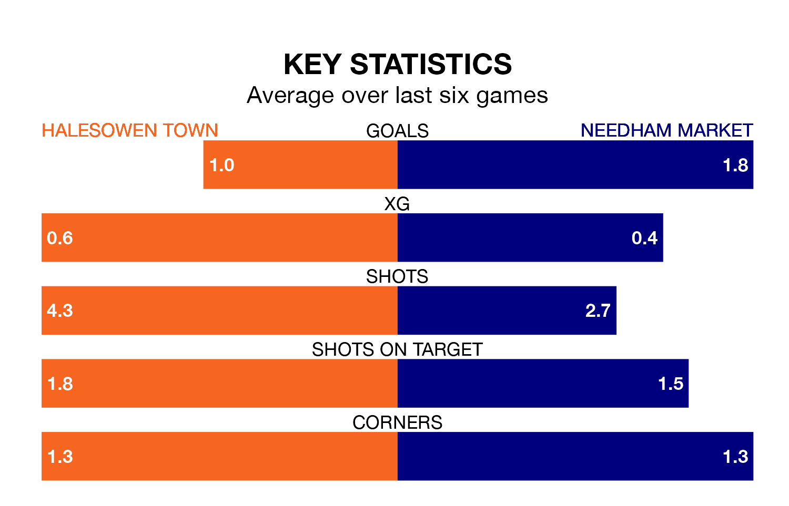

Halesowen Town host Needham Market on Saturday at the Grove in Southern League Premier Central.
In their last league match, on January 6, Halesowen beat Stourbridge 1-0 at home, with their goal scored by.
Needham Market also won, 4-0 at home against Kettering Town, with scoring their goals.
Needham Market are top of the table after 22 games, of which they have won 14 and drawn five, earning 47 points.
Halesowen are eight places behind the visitors in ninth, with 10 wins and seven draws putting them on 37 points.
With 43 goals in 22 games so far this season, Needham Market are scoring more than average in the league with 2.0 goals per game. And they are conceding fewer than average, letting in 16 goals at a rate of 0.7 per game.
Town, meanwhile, are average scorers, with 1.5 goals per game. They have conceded 1.3 goals per game.
The home side are in mixed form in Southern League Premier Central, with three wins and three losses from their last six games.
With four wins and a draw over that period, Needham Market's form is better – they have taken 13 points from 18, compared to Halesowen's nine.
Updated: 10:50, 10/01/24